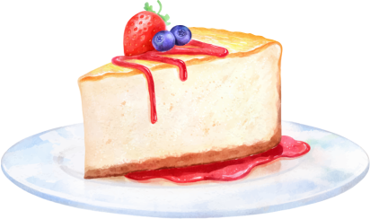

Cheesecake de Frutas
Essa receita de cheesecake de frutas vermelhas é simplesmente deliciosa! A combinação do doce do morango com o sabor levemente ácido do mirtilo cria uma sobremesa fresca e equilibrada. Além disso, a textura cremosa do cheesecake contrasta perfeitamente com a crocância da base de biscoitos. Se você está procurando uma sobremesa fácil de fazer e que impressione seus convidados, essa é a receita ideal.
Modo de Preparo
- 200g de biscoitos maisena
- 100g de manteiga
- 1 xícara de mirtilos
- 1 lata de leite condensado
- 1/2 xícara de suco de limão
- 1 colher de sopa de gelatina em pó incolor
- 1 xícara de morangos picados
- 300g de cream cheese
Ingredientes
- Triture os biscoitos e misture com a manteiga derretida. Forre uma forma e leve à geladeira.
- Bata o cream cheese, leite condensado e suco de limão. Adicione a gelatina dissolvida.
- Despeje sobre a base de biscoitos e leve à geladeira por 2 horas.
- Cubra com as frutas e sirva gelado.